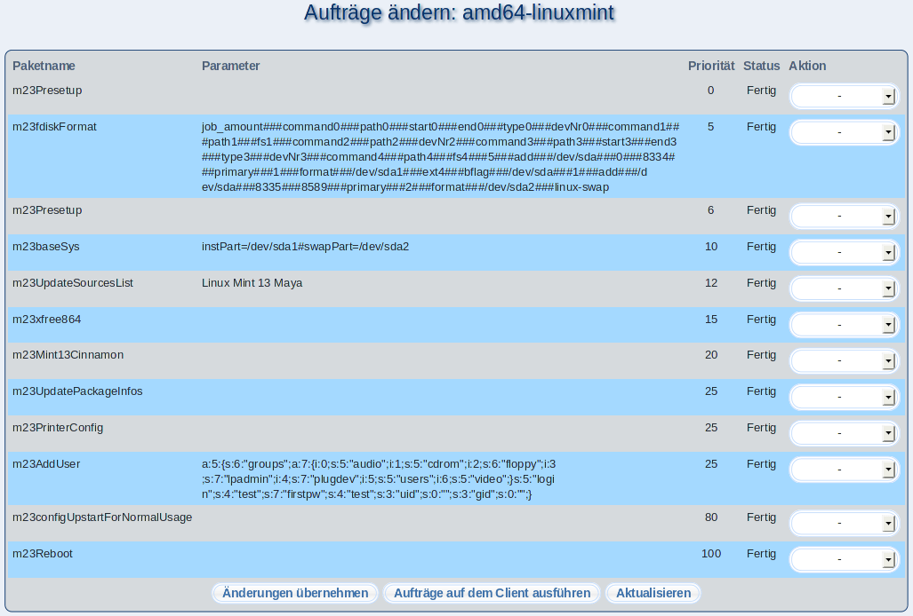

Hier können Sie bereits abgearbeitete und wartende Aufträge des Clients begutachten und ggf. ändern. Es stehen Ihnen folgende Änderungsmöglichkeiten zur Verfügung:
- Wählen Sie bei ''Aktion'' Löschen aus, um den Auftrag endgültig zu verwerfen.
- Wiederholen setzt einen bereits abgearbeiteten Auftrag wieder auf die Liste der auszuführenden Aufträge.
- Fertig markiert einen Auftrag als abgeschlossen. Dieser wird deshalb nicht mehr ausgeführt.
Klicken Sie anschließend auf ''Änderungen übernehmen'', um die Änderungen durchzuführen. Möchten Sie zusätzlich, daß die von Ihnen auf Wiederholen gesetzte Aufträge sofort ausgeführt werden, so klicken Sie auf ''Aufträge auf dem Client ausführen''.
root
2015-04-30